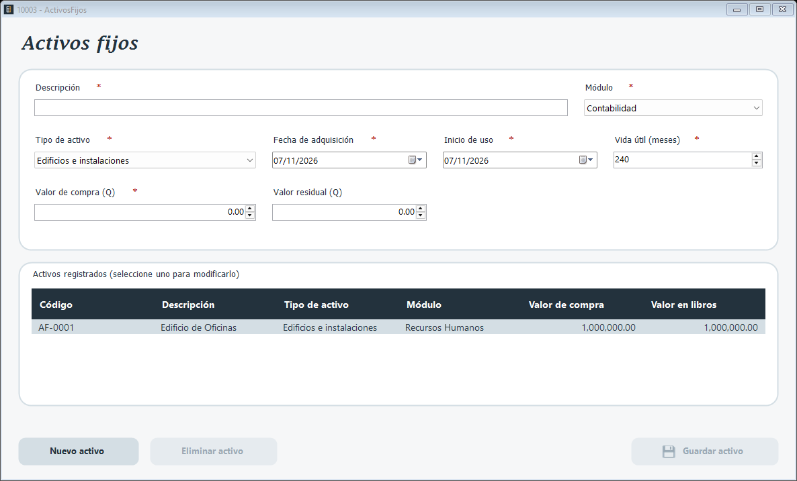

Registro de los activos fijos de la empresa. Cada activo recibe un código AF-#### y se deprecia por el método de línea recta. La tabla de abajo muestra los activos registrados con su valor de compra y su valor en libros.

1. Presione Nuevo activo.
2. Escriba la Descripción y elija el Módulo y el Tipo de activo.
3. Indique la Fecha de adquisición y el Inicio de uso.
4. Revise la Vida útil (meses), que se sugiere según el tipo de activo, y escriba el Valor de compra (Q) y el Valor residual (Q).
5. Presione Guardar activo.
1. Seleccione el activo en la tabla Activos registrados; sus datos pasan al formulario.
2. Cambie lo necesario y presione Guardar activo.
3. Para darlo de baja presione Eliminar activo y confirme. El activo no se borra: queda inactivo.
El inicio de uso no puede ser anterior a la adquisición, el valor de compra debe ser mayor que cero y el residual no puede superarlo.
Los activos del módulo de Logística se envían también a ese módulo.